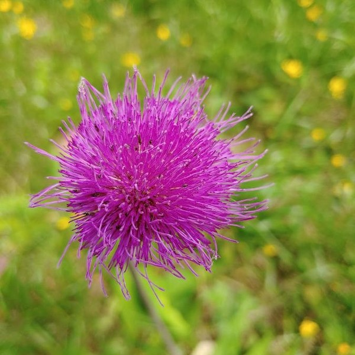

{{
}}
Faire une présentation scientifique
Joseph Salmon

Mainly joint work with:
- Tanguy Lefort (Univ. Montpellier, IMAG)
- Benjamin Charlier (Univ. Montpellier, IMAG)
- Camille Garcin (Univ. Montpellier, IMAG)
- Maximilien Servajean (Univ. Paul-Valéry-Montpellier, LIRMM, Univ. Montpellier)
- Alexis Joly (Inria, LIRMM, Univ. Montpellier)
and from

- Pierre Bonnet, Hervé Goëau (CIRAD, AMAP)
- Antoine Affouard, Jean-Christophe Lombardo, Titouan Lorieul, Mathias Chouet (Inria, LIRMM, Univ. Montpellier)
Pl@ntNet: ML for citizen science

A citizen science platform using machine learning to help people identify plants with their mobile phones
- Website: https://plantnet.org/
- Note: no mushroom identification!

https://identify.plantnet.org/stats
- Start in 2011, now 25M+ users
- 200+ countries
- Up to 2M image uploaded/day
- 50K species
- 1B+ total images
- 10M+ labeled / validated


Note: I am mostly innocent; started working with the Pl@ntNet team in 2020
- Pl@ntNet-300K (Garcin et al. 2021): Creation and release of a large-scale dataset sharing the same property as Pl@ntNet; available for the community to improve learning systems
- Learning & crowd-sourced data (Lefort, Charlier, et al. 2024) and (Lefort, Affouard, et al. 2024): How to leverage multiple labels per image to improve the model? Need to assert quality: the workers, the images/labels, the model, etc.
- Top-K learning (Garcin et al. 2022): Driven by theory, introduce new loss to cope with Pl@ntNet constraints to output multiple labels (e.g., UX, Deep Learning framework, etc.)

Intra-class variability

Inter-class ambiguity


Aggregating labels: open source tool
peerannot: Python library to handle crowdsourced data